This notebook implements a simulation-based Bayesian power analysis for conversion-rate A/B tests and compares it against the classical frequentist two-proportion z-test. We follow the Kruschke HDI+ROPE framework from The Bayesian New Statistics (Section “Planning for precision and other goals: Better done Bayesian”), in the same way as in the introductory example: Introduction to Bayesian Power Analysis: Exclude a Null Value. The process is as follows:
- Generate synthetic A/B test data across a grid of sample sizes and true relative lifts \(\omega\) (distributions).
- For each cell, fit a Bayesian model via MCMC and compute the \(95\%\) HDI of
the
relative_liftposterior. - Power = fraction of simulations where the \(95\%\) HDI falls entirely outside a Region of Practical Equivalence (ROPE).
We compare three prior specifications motivated by Prior Predictive Modeling in Bayesian AB Testing (see also The Bet Test):
| Model | Control prior | Treatment / Lift prior | Key property |
|---|---|---|---|
| Non-informative | \(\text{Uniform}(0,1)\) | \(\text{Uniform}(0,1)\) | Flat, no domain knowledge |
| Informative | \(\text{Beta}(15,600)\) | \(\text{Beta}(15,600)\) (independent) | Marginals informed, joint is too wide |
| Correlated | \(\text{Beta}(15,600)\) | via \(\text{Normal}(0,0.1)\) on lift | Joint is tight around the diagonal |
We show that the correlated model requires more samples for the same power (lower true-positive rate), but this comes with a concrete benefit: fewer false positives. We quantify this tradeoff by looking into the false positive rate (FPR) vs sample size**: the \(\omega=0\) slice of the power curves.
A similar approach is used in the easystats/bayestestR package.
Remark: This is related to the blog post by Demetri Pananos, Ph.D, where he derives explicit analytic expressions:
Prepare Notebook
from collections.abc import Callable
import arviz as az
import matplotlib.pyplot as plt
import numpy as np
import numpy.typing as npt
import preliz as pz
import pymc as pm
import pytensor.tensor as pt
import seaborn as sns
import xarray as xr
from matplotlib.ticker import FuncFormatter, PercentFormatter
from pydantic import BaseModel, ConfigDict, Field
from statsmodels.stats.power import NormalIndPower
from statsmodels.stats.proportion import proportion_effectsize
az.style.use("arviz-darkgrid")
plt.rcParams["figure.figsize"] = [10, 6]
plt.rcParams["figure.dpi"] = 100
plt.rcParams["figure.facecolor"] = "white"
%load_ext autoreload
%autoreload 2
%load_ext jaxtyping
%jaxtyping.typechecker beartype.beartype
%config InlineBackend.figure_format = "retina"seed: int = 42
rng: np.random.Generator = np.random.default_rng(seed=seed)Power Analysis Configuration
Let’s start by scoping the problem in view of an hypothetical A/B test. Let us assume the following historical conversion rate distribution:
historical_conversions_dist = pm.Beta.dist(alpha=15, beta=600)
historical_conversions = pm.draw(
historical_conversions_dist, draws=1_000, random_seed=rng
)
fig, ax = plt.subplots()
az.plot_dist(historical_conversions, fill_kwargs={"alpha": 0.5}, ax=ax)
ax.axvline(
historical_conversions.mean(),
color="C0",
linestyle="--",
alpha=0.8,
label=f"mean = {historical_conversions.mean():.2%}",
)
ax.legend()
ax.xaxis.set_major_formatter(PercentFormatter(1.0, decimals=1))
ax.set(xlabel="Conversion Rate", ylabel="Density")
ax.set_title("Historical Conversion Rate Distribution", fontsize=18, fontweight="bold");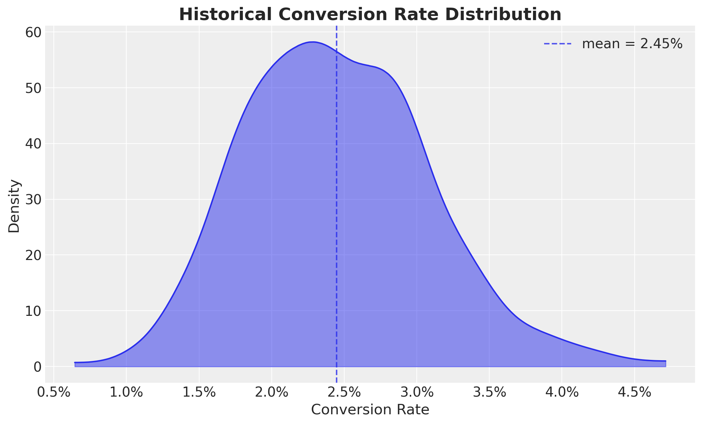
We now specify the power analysis configuration. We are interested in the effect of a new feature on the conversion rate, and we want to detect a relative lift of at least \(25\%\) (or \(0.25\)) with power \(80\%\) at \(\alpha=0.05\). We use a ROPE of \(\pm 5\%\) from the historical mean.
class PowerAnalysisConfig(BaseModel):
relative_lifts: npt.NDArray = Field(..., description="Relative lifts to test.")
sample_sizes: npt.NDArray = Field(..., description="Sample sizes to test.")
n_simulations: int = Field(..., description="Number of simulations.")
rope: tuple[float, float] = Field(
...,
description="""
Region of practical equivalence.
That is, the range of effect sizes that are considered negligible.
""",
)
hdi_prob: float = Field(..., description="HDI probability")
model_config = ConfigDict(arbitrary_types_allowed=True)
rope_bound = historical_conversions.mean() * 0.05
power_analysis_config = PowerAnalysisConfig(
relative_lifts=np.linspace(-0.25, 0.25, 5),
sample_sizes=np.linspace(100, 80_000, 9, dtype=int),
n_simulations=700,
hdi_prob=0.95,
rope=(-rope_bound, rope_bound),
)We visualize the prior distribution of the relative lift against the sequence of sample sizes distribitions:
fig, ax = plt.subplots()
for relative_lift in power_analysis_config.relative_lifts:
pz.Normal(mu=relative_lift, sigma=0.01).plot_pdf(ax=ax)
pz.Normal(mu=0, sigma=0.1).plot_pdf(color="black", ax=ax)
ax.set_title("Effect Size Distributions", fontsize=18, fontweight="bold");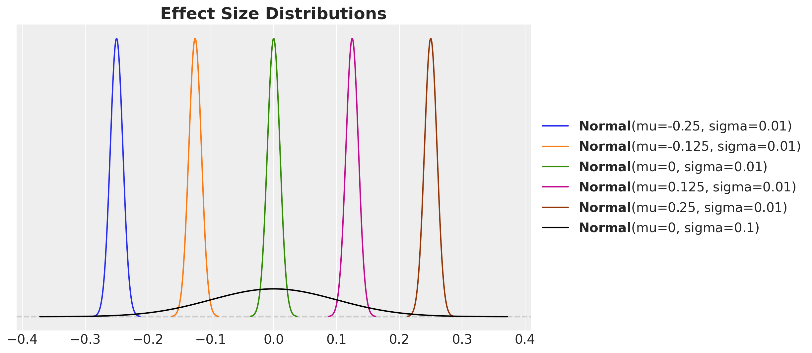
Data-Generating Model
We build a single vectorised PyMC model that generates synthetic A/B test data for all \((n, \omega, \text{simulation})\) combinations in one forward pass via pm.sample_prior_predictive. The data-generating process uses the correlated parameterisation: a shared Beta(15, 600) control rate with the lift drawn from \(\text{Normal}(\omega, 0.01)\).
def generating_model_factory(
power_analysis_config: PowerAnalysisConfig, rng: np.random.Generator
) -> tuple[az.InferenceData, pm.Model]:
coords = {
"sample_size": power_analysis_config.sample_sizes,
"omega": power_analysis_config.relative_lifts,
"simulation": range(power_analysis_config.n_simulations),
}
with pm.Model(coords=coords) as model:
sample_sizes_ = pm.Data(
"sample_sizes",
power_analysis_config.sample_sizes,
dims=("sample_size",),
)
sample_sizes_expanded = pt.expand_dims(
pt.as_tensor_variable(sample_sizes_), axis=[1, 2]
)
omegas_ = pm.Data(
"omegas", power_analysis_config.relative_lifts, dims=("omega",)
)
omegas_expanded = pt.expand_dims(pt.as_tensor_variable(omegas_), axis=[0, 2])
relative_lift = pm.Normal(
"relative_lift",
mu=omegas_expanded,
sigma=0.01,
dims=("sample_size", "omega", "simulation"),
)
conversion_rate_control = pm.Beta(
"conversion_rate_control",
alpha=15,
beta=600,
dims=("sample_size", "omega", "simulation"),
)
conversion_rate_treatment = pm.Deterministic(
"conversion_rate_treatment",
conversion_rate_control * (1 + relative_lift),
dims=("sample_size", "omega", "simulation"),
)
pm.Binomial(
"n_control",
n=sample_sizes_expanded,
p=conversion_rate_control,
dims=("sample_size", "omega", "simulation"),
)
pm.Binomial(
"n_treatment",
n=sample_sizes_expanded,
p=conversion_rate_treatment,
dims=("sample_size", "omega", "simulation"),
)
idata = pm.sample_prior_predictive(samples=1, random_seed=rng)
return idata, model
generating_model_idata, data_generating_model = generating_model_factory(
power_analysis_config=power_analysis_config, rng=rng
)
pm.model_to_graphviz(data_generating_model)Sampling: [conversion_rate_control, n_control, n_treatment, relative_lift]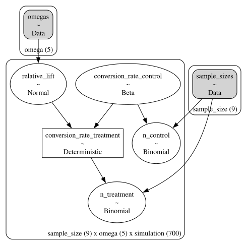
We now sample the prior predictive to extract the control and treatment data:
data_control = generating_model_idata["prior"]["n_control"].sel(chain=0, draw=0)
data_treatment = generating_model_idata["prior"]["n_treatment"].sel(chain=0, draw=0)Inference Model Factory
Next, we implement a single factory for the three models from the previous post: Prior Predictive Modeling in Bayesian AB Testing.
- Non-informative:
Uniform(0,1)on both conversion rates,relative_liftderived. - Informative:
Beta(15,600)independently on both rates,relative_liftderived. - Correlated:
Beta(15,600)on control,Normal(0,0.1)onrelative_lift, treatment derived.
Dims = tuple[str, ...]
def _non_informative_priors(
dims: Dims,
) -> tuple[pt.TensorVariable, pt.TensorVariable]:
conversion_rate_control = pm.Uniform(
"conversion_rate_control",
lower=0,
upper=1,
dims=dims,
)
conversion_rate_treatment = pm.Uniform(
"conversion_rate_treatment",
lower=0,
upper=1,
dims=dims,
)
pm.Deterministic(
"relative_lift",
conversion_rate_treatment / conversion_rate_control - 1,
dims=dims,
)
return conversion_rate_control, conversion_rate_treatment
def _informative_priors(
dims: Dims,
) -> tuple[pt.TensorVariable, pt.TensorVariable]:
conversion_rate_control = pm.Beta(
"conversion_rate_control",
alpha=15,
beta=600,
dims=dims,
)
conversion_rate_treatment = pm.Beta(
"conversion_rate_treatment",
alpha=15,
beta=600,
dims=dims,
)
pm.Deterministic(
"relative_lift",
conversion_rate_treatment / conversion_rate_control - 1,
dims=dims,
)
return conversion_rate_control, conversion_rate_treatment
def _correlated_priors(
dims: Dims,
) -> tuple[pt.TensorVariable, pt.TensorVariable]:
conversion_rate_control = pm.Beta(
"conversion_rate_control",
alpha=15,
beta=600,
dims=dims,
)
relative_lift = pm.Normal(
"relative_lift",
mu=0,
sigma=0.1,
dims=dims,
)
conversion_rate_treatment = pm.Deterministic(
"conversion_rate_treatment",
conversion_rate_control * (1 + relative_lift),
dims=dims,
)
return conversion_rate_control, conversion_rate_treatment
class ModelType(BaseModel):
name: str = Field(..., description="Name of the model.")
prior_fn: Callable[[Dims], tuple[pt.TensorVariable, pt.TensorVariable]] = Field(
..., description="Prior function."
)
model: pm.Model | None = Field(default=None, description="PyMC model.")
idata: az.InferenceData | None = Field(default=None, description="Inference data.")
power_results: xr.DataArray | None = Field(
default=None, description="Power results."
)
model_config = ConfigDict(arbitrary_types_allowed=True)
def inference_model_factory(
prior_fn: Callable[[Dims], tuple[pt.TensorVariable, pt.TensorVariable]],
power_analysis_config: PowerAnalysisConfig,
data_control: xr.DataArray,
data_treatment: xr.DataArray,
) -> pm.Model:
coords = {
"sample_size": power_analysis_config.sample_sizes,
"omega": power_analysis_config.relative_lifts,
"simulation": range(power_analysis_config.n_simulations),
}
dims = ("sample_size", "omega", "simulation")
with pm.Model(coords=coords) as model:
sample_sizes_ = pm.Data(
"sample_sizes",
power_analysis_config.sample_sizes,
dims=("sample_size",),
)
data_control_ = pm.Data("data_control", data_control, dims=dims)
data_treatment_ = pm.Data("data_treatment", data_treatment, dims=dims)
sample_sizes_expanded = pt.expand_dims(
pt.as_tensor_variable(sample_sizes_), axis=[1, 2]
)
conversion_rate_control, conversion_rate_treatment = prior_fn(dims)
pm.Binomial(
"n_control",
n=sample_sizes_expanded,
p=conversion_rate_control,
observed=data_control_,
dims=dims,
)
pm.Binomial(
"n_treatment",
n=sample_sizes_expanded,
p=conversion_rate_treatment,
observed=data_treatment_,
dims=dims,
)
return modelLet’s instantiate the three models objects:
model_types: list[ModelType] = [
ModelType(
name="non_informative",
prior_fn=_non_informative_priors,
),
ModelType(
name="informative",
prior_fn=_informative_priors,
),
ModelType(
name="correlated",
prior_fn=_correlated_priors,
),
]
for model_type in model_types:
model_type.model = inference_model_factory(
model_type.prior_fn,
power_analysis_config,
data_control,
data_treatment,
)Let’s visualize the models structures:
# Non-informative
pm.model_to_graphviz(model_types[0].model)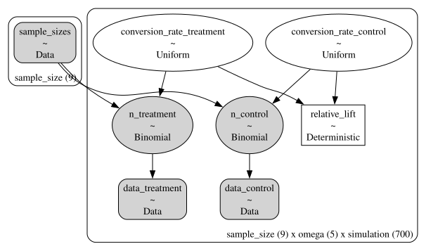
# Informative
pm.model_to_graphviz(model_types[1].model)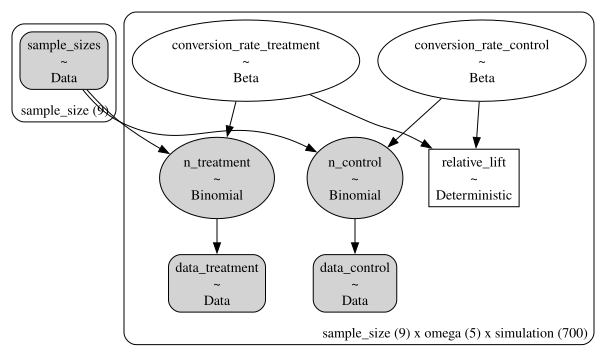
# Correlated
pm.model_to_graphviz(model_types[2].model)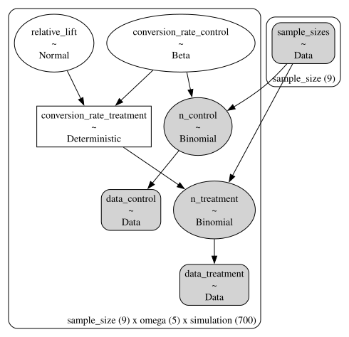
MCMC Sampling
We sample the posterior with NUTS via nutpie for each model.
%%time
for model_type in model_types:
with model_type.model:
model_type.idata = pm.sample(
tune=500,
draws=100,
chains=14,
cores=14,
nuts_sampler="nutpie",
compile_kwargs={"gradient_backend": "jax"},
random_seed=rng,
)CPU times: user 2h 18min 24s, sys: 1min 31s, total: 2h 19min 56s
Wall time: 14min 10sConvergence Diagnostics
Let’s look into the energy diagnostics (as we did not see any divergences during sampling):
fig, axes = plt.subplots(
nrows=len(model_types),
ncols=1,
figsize=(10, 12),
sharex=True,
sharey=True,
layout="constrained",
)
for ax, model_type in zip(axes, model_types, strict=True):
az.plot_energy(model_type.idata, bfmi=True, ax=ax)
ax.set_title(model_type.name)
ax.legend(loc="center left", bbox_to_anchor=(1, 0.5), fontsize=10)
fig.suptitle("Energy Diagnostics", fontsize=18, fontweight="bold");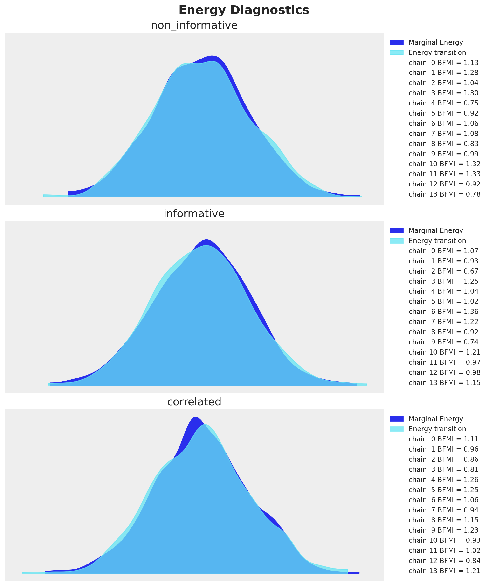
Every model has Bayesian Fraction of Missing Information (BFMI) close to \(1\), so we are good to go.
We can also check the R-hats of the posterior samples:
fig, axes = plt.subplots(
nrows=len(model_types),
ncols=1,
figsize=(10, 12),
sharex=True,
sharey=True,
layout="constrained",
)
for ax, model_type in zip(axes, model_types, strict=True):
rhats = az.rhat(
model_type.idata["posterior"],
var_names=[
"conversion_rate_control",
"conversion_rate_treatment",
"relative_lift",
],
)
sns.ecdfplot(rhats.to_dataframe(), ax=ax)
ax.set_title(model_type.name)
ax.set(xlabel="R-hat")
fig.suptitle("R-hats", fontsize=18, fontweight="bold");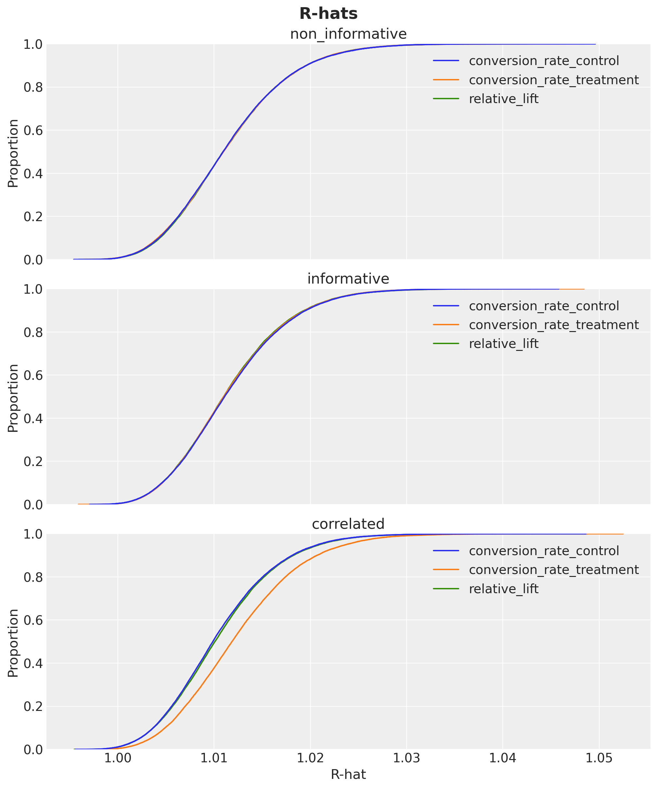
They are look withing a reasonable range close to \(1\).
Bayesian Power Curves
We now compute the power for each model by computing the fraction of simulations where the \(95\%\) HDI of the relative lift falls entirely outside the ROPE.
def compute_bayesian_power(
idata: az.InferenceData,
power_analysis_config: PowerAnalysisConfig,
) -> xr.DataArray:
hdi = az.hdi(
idata["posterior"]["relative_lift"], hdi_prob=power_analysis_config.hdi_prob
)["relative_lift"]
condition_1 = hdi.sel(hdi="lower") > power_analysis_config.rope[1]
condition_2 = hdi.sel(hdi="higher") < power_analysis_config.rope[0]
return (condition_1 | condition_2).mean(dim="simulation")
for model_type in model_types:
model_type.power_results = compute_bayesian_power(
model_type.idata, power_analysis_config
)Now we can plot the power curves for all three models as a function of the sample size:
palette = sns.color_palette(
"Spectral", n_colors=len(power_analysis_config.relative_lifts)
)
fig, axes = plt.subplots(
nrows=len(model_types),
ncols=1,
figsize=(10, 12),
sharex=True,
sharey=True,
layout="constrained",
)
for ax, model_type in zip(axes, model_types, strict=True):
df = (
model_type.power_results.to_dataframe(name="power")
.reset_index(drop=False)
.assign(omega=lambda x: x["omega"].astype("str"))
)
sns.lineplot(
data=df,
x="sample_size",
y="power",
hue="omega",
marker="o",
markeredgecolor="black",
markersize=8,
linewidth=3,
palette=palette,
ax=ax,
)
ax.axhline(0.8, color="black", linestyle="--", alpha=0.8)
ax.legend(
loc="center left",
bbox_to_anchor=(1, 0.5),
fontsize=16,
title=r"$\omega$ (lift)",
title_fontsize=16,
)
ax.set(
title=model_type.name,
xlabel="sample size",
ylabel="power",
)
ax.xaxis.set_major_formatter(FuncFormatter(lambda x, pos: f"{x / 1000:,.0f}" + "K"))
fig.suptitle(
"Bayesian Power Analysis (HDI + ROPE)",
fontsize=18,
fontweight="bold",
y=1.03,
);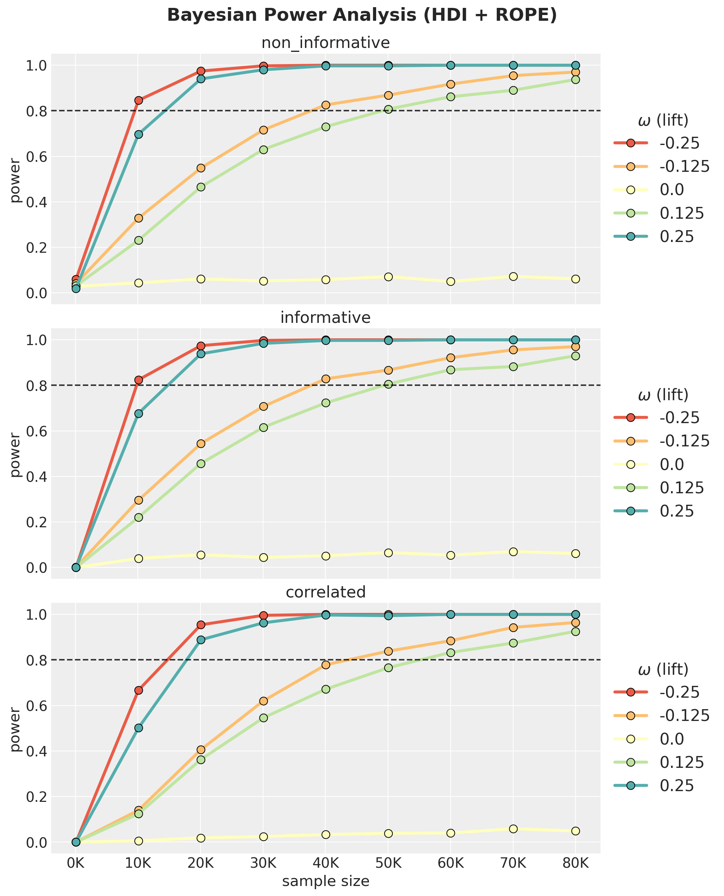
Findings: Impact of Prior Choice on Power
The three-panel plot reveals a clear ordering:
- Non-informative (Uniform) reaches the highest power. With flat priors the posterior is driven mostly by data.
- Informative (independent
Beta(15,600)) is slightly below, but still very close to the non-informative model. - Correlated (
Normal(0, 0.1)on lift) is the most conservative. Its prior concentrates 95% of mass within \(|\omega| < 0.2\). For true effects beyond that range, the prior is in strong conflict with the data, producing substantial posterior shrinkage and low power. This is by design: the model is sceptical of large lifts, consistent with Twyman’s law (“Any figure that looks interesting or different is usually wrong”).
Remark. Observe there is a clear asymmetry in power: negative \(\omega\) values (lower treatment rate) consistently show higher power than positive ones of the same magnitude. This is because lower proportions have smaller Binomial variance \(p(1-p)\), making each observation more informative about the relative lift Intuitively: when the treatment reduces conversion (negative \(\omega\)), you’re pushing \(p_{\text{treatment}}\) closer to zero where each observation is very informative (almost everyone doesn’t convert, deviations are easy to spot). When the treatment increases conversion (positive \(\omega\)), \(p_{\text{treatment}}\) moves toward the noisier middle range. This asymmetry gets more dramatic for lower baselines and larger \(|\omega|\). For a \(50\%\) baseline it would essentially vanish, since \(p(1-p)\) is nearly flat around \(p = 0.5\).
fig, ax = plt.subplots()
p_range = np.linspace(0, 1, 100)
ax.plot(p_range, p_range * (1 - p_range))
ax.set(xlabel="p", ylabel="variance")
ax.set_title("Variance of a binomial distribution", fontsize=18, fontweight="bold");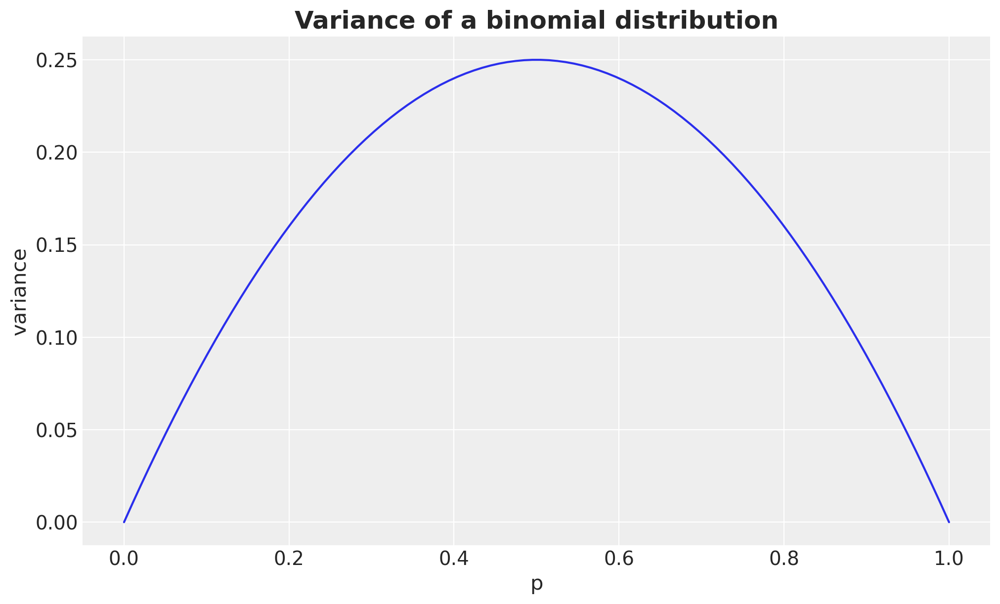
Frequentist Power Analysis (Two-Proportion Z-Test)
For comparison, we compute the analytical power of a classical two-proportion z-test (using Cohen’s \(h\) effect size) at \(\alpha = 0.05\). This serves as a well-understood benchmark: it assumes no prior information and tests whether the observed proportions differ from each other. We use the statsmodels implementation of the power analysis via NormalIndPower.
def compute_frequentist_power(
power_analysis_config: PowerAnalysisConfig,
p_control: float,
alpha: float = 0.05,
) -> xr.DataArray:
omegas = power_analysis_config.relative_lifts
power_solver = NormalIndPower()
sample_sizes = power_analysis_config.sample_sizes
power_grid = np.zeros((len(sample_sizes), len(omegas)))
for j, omega in enumerate(omegas):
p_treatment = p_control * (1 + omega)
if p_treatment <= 0 or p_treatment >= 1 or np.isclose(omega, 0):
power_grid[:, j] = alpha if np.isclose(omega, 0) else np.nan
continue
h = proportion_effectsize(p_treatment, p_control)
for i, sample_size in enumerate(sample_sizes):
power_grid[i, j] = power_solver.solve_power(
effect_size=h,
nobs1=sample_size,
power=None, # This is the value we want to solve for!
alpha=alpha,
ratio=1,
alternative="two-sided",
)
return xr.DataArray(
power_grid,
dims=("sample_size", "omega"),
coords={"sample_size": sample_sizes, "omega": omegas},
)
p_control = 15 / (15 + 600)
freq_power = compute_frequentist_power(
power_analysis_config=power_analysis_config,
p_control=p_control,
)Let’s plot the power curves for the frequentist model:
fig, ax = plt.subplots()
df_freq = (
freq_power.to_dataframe(name="power")
.reset_index(drop=False)
.assign(omega=lambda x: x["omega"].astype("str"))
)
sns.lineplot(
data=df_freq,
x="sample_size",
y="power",
hue="omega",
marker="o",
markeredgecolor="black",
markersize=8,
linewidth=3,
palette=palette,
ax=ax,
)
ax.axhline(0.8, color="black", linestyle="--", alpha=0.8)
ax.legend(
loc="center left",
bbox_to_anchor=(1, 0.5),
fontsize=16,
title=r"$\omega$ (lift)",
title_fontsize=16,
)
ax.xaxis.set_major_formatter(FuncFormatter(lambda x, pos: f"{x / 1000:,.0f}" + "K"))
ax.set(xlabel="sample size", ylabel="power")
ax.set_title(
"Power Analysis (Frequentist Two-Proportion Z-Test)",
fontsize=18,
fontweight="bold",
);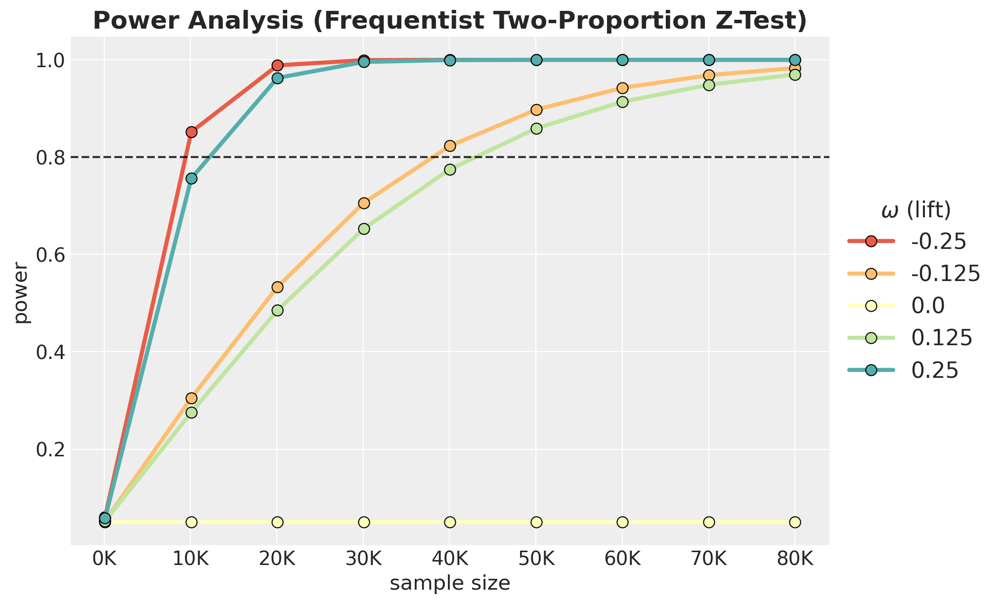
Comparison
Now we can compare all four approaches on the same sample-size range.
fig, axes = plt.subplots(
nrows=2,
ncols=2,
figsize=(15, 10),
sharey=True,
sharex=True,
layout="constrained",
)
plot_specs: list[tuple[str, xr.DataArray]] = [
("Frequentist (Z-Test)", freq_power),
*[(model_type.name, model_type.power_results) for model_type in model_types],
]
for ax, (title, power_data) in zip(axes.flat, plot_specs, strict=True):
df = (
power_data.to_dataframe(name="power")
.reset_index(drop=False)
.assign(omega=lambda x: x["omega"].astype("str"))
)
sns.lineplot(
data=df,
x="sample_size",
y="power",
hue="omega",
marker="o",
markeredgecolor="black",
markersize=5,
linewidth=2,
palette=palette,
ax=ax,
)
ax.axhline(0.8, color="black", linestyle="--", alpha=0.8)
ax.get_legend().remove()
ax.xaxis.set_major_formatter(FuncFormatter(lambda x, pos: f"{x / 1000:,.0f}" + "K"))
ax.set(xlabel="sample size", ylabel="power")
ax.set_title(title, fontsize=16, fontweight="bold")
handles, labels = axes.flat[-1].get_legend_handles_labels()
rounded_labels = [f"{float(label):.3f}" for label in labels]
fig.legend(
handles,
rounded_labels,
loc="center right",
bbox_to_anchor=(1.12, 0.5),
fontsize=16,
title=r"$\omega$ (lift)",
title_fontsize=16,
)
fig.suptitle(
"Power Analysis Comparison (Bayesian vs Frequentist)",
fontsize=20,
fontweight="bold",
y=1.05,
);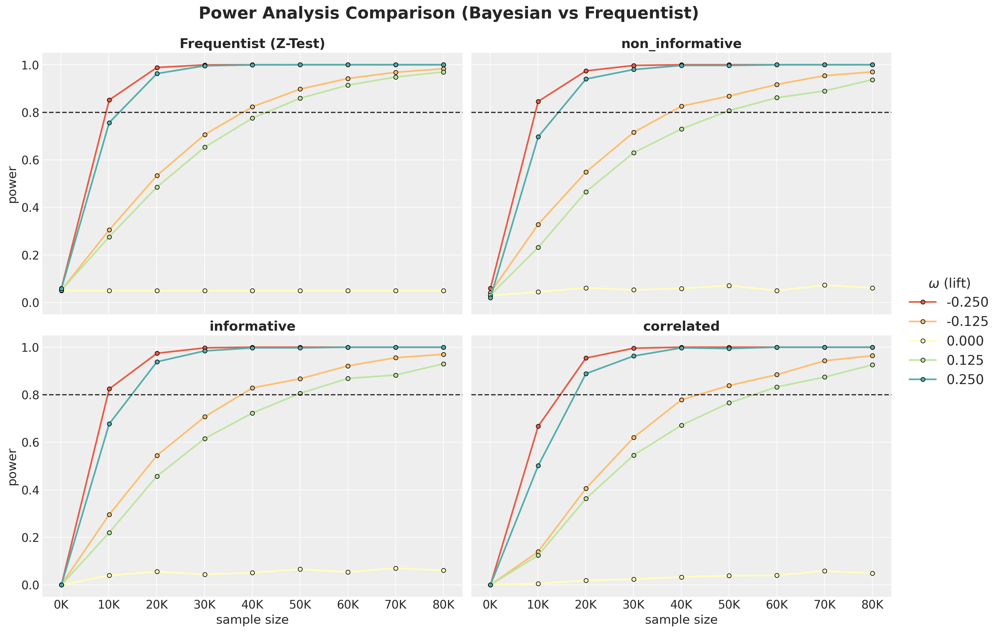
We see that the frequentist model is very similar to the non-informative Bayesian model.
Quantifying the “Conservativeness” Benefit
The correlated model requires more samples for the same power (lower true-positive rate), but this comes with a concrete benefit: fewer false positives. We quantify this tradeoff by looking into the false positive rate (FPR) vs sample size: the \(\omega=0\) slice of the power curves.
fig, ax = plt.subplots(figsize=(10, 6))
fpr_by_n: dict[str, xr.DataArray] = {}
for i, model_type in enumerate(model_types):
fpr = model_type.power_results.sel(omega=0.0)
fpr_by_n[model_type.name] = fpr
ax.plot(
power_analysis_config.sample_sizes,
fpr.values,
color=f"C{i}",
marker="o",
markeredgecolor="black",
linewidth=2,
label=model_type.name,
)
ax.axhline(0.05, color="black", linestyle=":", alpha=0.6, label=r"$\alpha = 0.05$")
ax.set(
xlabel="Sample Size (per group)",
ylabel="False Positive Rate",
)
ax.xaxis.set_major_formatter(FuncFormatter(lambda x, pos: f"{x / 1000:,.0f}" + "K"))
ax.yaxis.set_major_formatter(PercentFormatter(xmax=1, decimals=0))
ax.legend()
ax.set_title(
"False Positive Rate at $\\omega=0$ (No True Effect)",
fontsize=18,
fontweight="bold",
);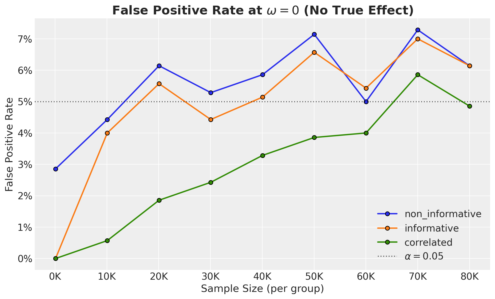
We clearly see that the correlated model much lower FPR than the other models. This is especially important when the sample size is relatively small.
Key Takeaways
Prior choice dominates Bayesian power. The correlated model’s tight
Normal(0, 0.1)prior on relative lift provides strong regularisation, but requires substantially larger samples to detect eal effects, especially when \(|\omega| > 0.2\).Non-informative Bayesian \(\approx\) Frequentist. With flat priors and a narrow ROPE, the HDI+ROPE criterion reduces to a significance test: both give \(\sim 5\%\) false-positive rates and nearly identical power curves.
Independent informative priors are a trap. The
Beta(15, 600)model constrains each marginal conversion rate realistically, but the joint prior on relative lift remains too wide, leading to the “bet test” failure described in the Eppo blog post.Practical recommendation. Use the correlated parameterisation for production A/B testing (it prevents Twyman’s-law false discoveries), but plan experiments with the understanding that you need larger samples to achieve the same power as a naive frequentist analysis.